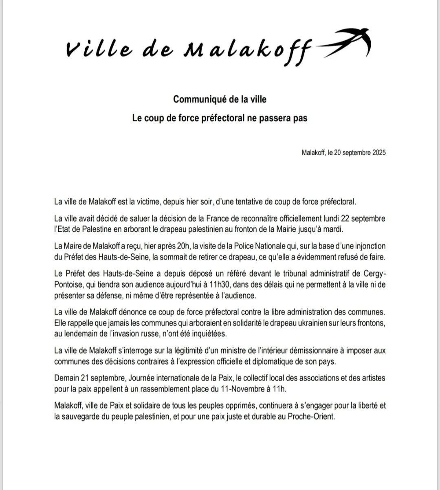

Prise de position
Drapeau palestinien à Malakoff. Notre solidarité avec Jacqueline Belhomme
Date de mise à jour indiquée par Facebook · 21 septembre 2025
Repères éditoriaux
Nous avons exprimé notre solidarité avec Jacqueline Belhomme, maire de Malakoff. Dans son communiqué du 20 septembre 2025, la Ville explique que le préfet des Hauts-de-Seine lui a demandé de retirer le drapeau palestinien du fronton de la mairie. Malakoff avait choisi de hisser ce drapeau pour saluer la reconnaissance de l’État de Palestine par la France.
Texte conservé avec la publication
Solidarité avec Jacqueline Belhomme ! C'est le génocide qu'il faut arrêter, pas le drapeau qu'il faut retirer !

Sources
Archive rouge · export Facebook · AR-0002-FB-01007
À lire aussi · À Niort, des drapeaux palestiniens devant l’hôtel de ville le 22 septembre